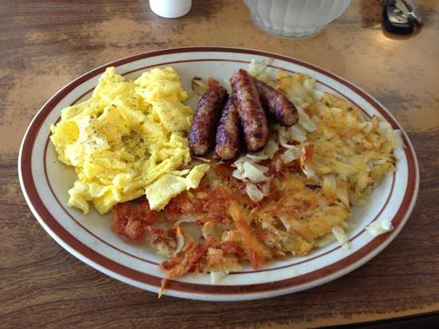

Description
A basic plate with eggs, hashbrowns, and sausages. "Brunch" comes from a combination of breakfast and lunch, but I say why stop there?!
Ingredients
- Sausages
- Eggs
- Hashbrowns
- Seasoning
- 2 1/2 tbsp paprika
- 2 tbsp salt
- 2 tbsp garlic powder
- 1 tbsp oregano
- 1 tbsp thyme
- 1 tbsp black pepper
- 1 tbsp onion powder
- 1 tbsp cayenne powder
Steps
- Put oil in 3 saucepans and place 2 on medium heat
- Once heated, add hashbrowns to one pan and sausages to the other
- Sprinkle seasoning across hashbrowns and set a 14 minute timer
- Scramble eggs, adding salt, pepper, and 1 spoonful of milk and water for each egg
- Place 3rd pan on medium-low heat
- Turn sausages and mix the hashbrowns
- Pour the eggs into 3rd pan, mixing consistently for 5 minutes
- Serve while hot!